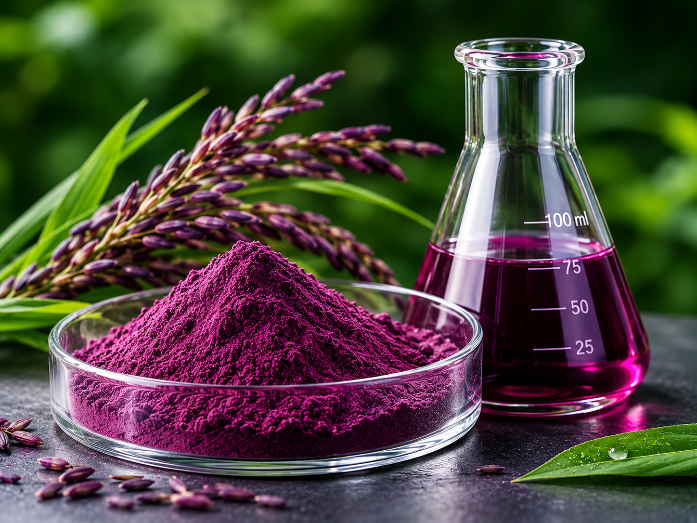

從紫米與藍莓的自然饋贈，到高科技無菌車間的嚴謹提取。我們不僅提供產品，更提供可追溯的科學依據。
花青素（Anthocyanin）是一種強有力的天然抗氧化劑，廣泛存在於紫米、藍莓等深色植物中。天鼎研發團隊以紫米為主、藍莓為輔，通過現代生物萃取技術，將這份自然饋贈轉化為易於吸收的大健康產品。
經過海歸研發團隊的反覆測試，尋找紫米與藍莓的最佳提取比例。
保留植物天然活性成分，對抗自由基，為身體提供日常健康呵護。
嚴選優質農作物，拒絕有害化學添加，確保產品的天然與安全。
花青素對溫度極為敏感，傳統 60°C-80°C 的高溫浸提極易引發多酚降解。哈工大王振宇教授團隊研發的仿生技術，全程將溫度嚴格控制在 45°C 以下，有效模擬植物體內自然生化反應環境。

天鼎深度合作的產業園，依託建三江 1200 萬畝水田，擁有全國最大的 50 萬畝紫稻種植基地，年產紫稻 25 萬噸。從源頭把控品質，確保原料的純淨與穩定供應。